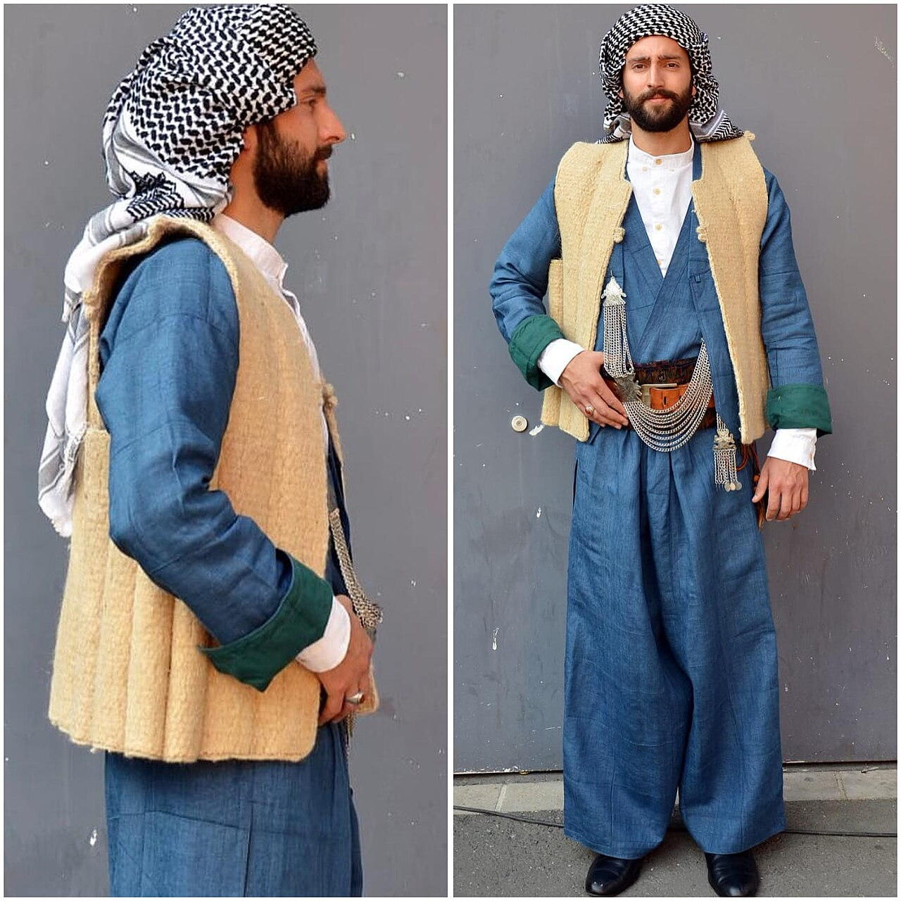
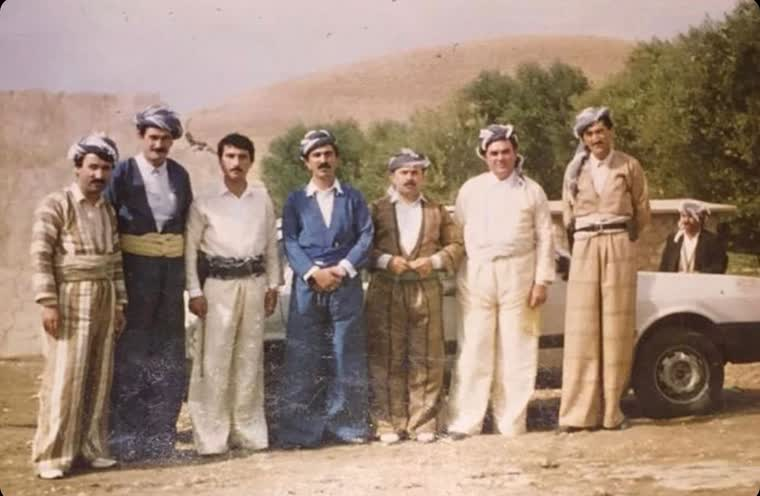

Ön Sipariş

Puşi (poşu), omuza atılan ya da başa sarılan püsküllü geleneksel örtüdür. Hem günlük kombinlere otantik bir dokunuş katar hem de halay başında ve özel günlerde geleneği yaşatır.




Koleksiyonumuzu beğendiyseniz tek tıkla talep bırakın; yeterli talep oluştuğunda satışa başlıyoruz.